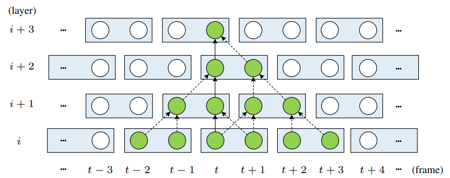

VRT:A Video Restoration Transformer
VRT: A Video Restoration Transformer
Abstract
视频恢复(如视频超分辨率)旨在从低质量帧恢复高质量帧。与单个图像恢复不同，视频恢复通常需要利用多个相邻但通常不对齐的视频帧的时间信息，现有的深度方法通常通过利用滑动窗口策略或循环结构来解决这个问题，这些方法要么受到逐帧恢复的限制，要么缺乏远程建模能力。
我们提出一个具有平行帧预测和长时间依赖建模能力的Video Restoration Transformer。具体来说，VRT由多个尺度组成，每个尺度由两种模块组成:时间相互自注意（ temporal mutual self attention，TMSA）和平行扭曲（parallel warping）。TMSA将视频分割成小片段，利用mutual attention进行joint运动估计、特征对齐和特征融合，利用自注意力进行特征提取。为了实现cross-clip interactions，视频序列每隔一层就会被移动。此外，利用parallel warping进一步融合相邻帧的信息。实验good。
Video Restoration Transformer
Overall Framework：
令，为LQ输入帧序列，为高质量目标帧，s是上采样因子，超分任务的话不为1。VRT可以完成各种任务，如去噪超分去模糊。VRT主要分为两个部分，feature extraction和reconstruction：
**Feature extraction：**先用个简单的2d卷积从输入提取shallow feature ，提出一种多尺度方法，对不同分辨率的帧进行对齐，具体的说，当总尺度为S时，通过将每2x2领域压缩到通道维度并通过线性层减少通道数进行s-1次下采样。然后通过特征解压缩逐步对特征进行上采样，然后通过TMSA和PW来融合，同时为相同scale的特征添加skip connection。经过多尺度特征提取、对齐和融合，加入TMSA进一步细化，得到深度特征.
**Reconstruction：**特征提取之后，我们将浅层和深层相加最终重构出HQ帧，不同帧根据各自特征独立重构。为了减轻特征学习负担，我们采用全局残差学习，只预测双线性上采样LQ序列与gt HQ序列间的residual。不同的重建模块用与不同的恢复任务，对于视频SR，用亚像素卷积层，去模糊，只用单个卷积层。
Temporal Mutual Self Attention：
Mutual attention：
给出inference frame feature参考帧特征和supporting frame feature辅助帧特征，其中N是feature element的数量，C是通道数，从这俩特征计算query，key和value：
其中三个P是projection matrix投影矩阵大小为，D是projected特征的通道数。用q来query查询k来生成attention map：，用来当V的权重：
其中softmax表示行softmax操作，和分别来自和，A表示参考帧和辅助帧之间的关系，为清楚起见，重写一下上式中参考图像的第i个元素：
其中表示参考帧中第i个元素的新特征，如下图所示，当（类似于辅助帧中的黄色方块）是最接近（参考帧中的黄色方块），则对所有的有：，（也就是最像的相关性最大），当k很不像q的时候，就会被设置为0：
当这种情况发生时，就有，这就让辅助帧中的第k个元素的位置移动到参考帧的第i个元素的位置，如图中红色虚线。这类似于给定光流矢量的image warping，如果不为1，也就是有其他相似度高的位置，可以看做是image warping的soft版本。在实践中，参考帧和辅助帧可以交换，允许两帧之间的相互校准。此外，与多头注意力类似，我们耶可以进行h次注意，然后concat结果得到multi-head mutual attention(MMA)。
mutual attention比显式运动估计和image warping相结合有几个好处。首先，与只关注目标像素的image warping相比，mutual attention可以自适应保留来自辅助帧的信息。还避免了没有匹配位置时的hole artifacts，其次，mutual attention不存在局部的归纳偏置，大多数cnn会有局部性，当相邻物体走向不同方向时，性能会下降。
Temporal mutual self attention (TMSA)：
mutual attention用来对对齐相邻帧的联合特征，为了从当前帧中提取和保留特征，我们同时使用mutual attention和self attention，令代表两帧，可以分解为和，我们在X1和X2上使用多头互注意力（MMA）两次，互相warping，将warping的特征combined然后与MSA的结果进行concat，用MLP进行降维。之后，用另一个MLP进一步特征转换，如大图中绿框所示，还使用了两layerNorm和两残差连接，过程如下：
由于相互注意的设计，TRSA以此只能处理两帧。将其扩展到T帧的一种简单方法是详尽地处理frame-to-frame，这会导致计算复杂度为t的平方。受滑窗机制的启发，我们提出了TMSA（temporal mutual self attention）来解决这个问题，该方案首先将视频序列分割成互不重叠的两帧片段，然后对其应用TRSA，如下图所示：

每隔一层序列移动一帧，以此实现交叉连接，将计算复杂度降低到ot，当多个TMSA堆叠到一起时，时序感受野增加，具体来说，在第i层，一帧可以利用最多2（i-1）帧的信息。
Discussion：
视频恢复通常需要处理高分辨率的帧，由于注意力的复杂度是窗口内元素数量的二次方，因此对整个图像全局注意力是不切实际的，因此，根据swinIR的原理，将图像在空间上划分为不重叠的MxM局部窗口，产生个窗口，移位窗口机制（shifted window mechanism，一般是（向下取整）个像素）在空间上被使用来实现cross-window connection。此外，虽然叠加多个TMSA模块可以进行远距离时间建模，但远距离帧不能进行直接连接。正如消融研究中所显示的那样，仅使用小的时间窗口不能充分利用模型的潜力。因此，我们在TMSA模块的最后四分之一使用更大的时间窗口大小来实现远程帧之间的直接交互。
Parallel Warping：
由于空间窗口分割，mutual attention机制可能不能很好地处理大的运动。因此，如图2中橙色框所示，我们在每个网络阶段结束时使用feature warping来处理大型运动，对于任意特征，计算相邻特征的光流并前后warping，然后与原始特征concat，并用MLP进行特征融合和降维。具体来说，跟basicvsr++一样，用光流估计模型来预测residual flow，并用可变卷积对齐。